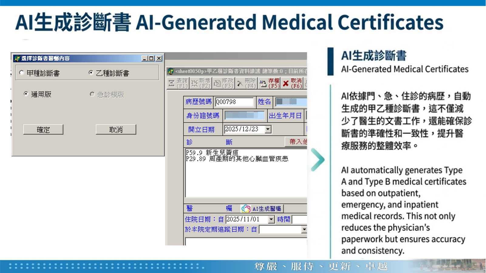
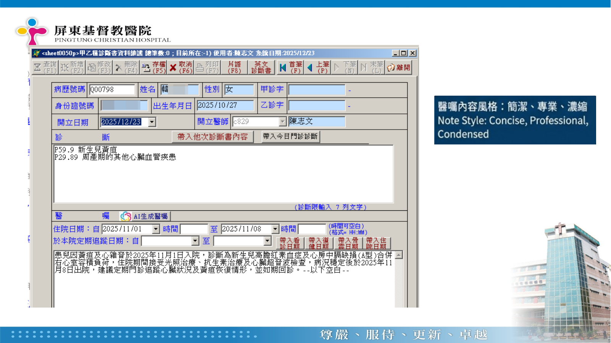

AI 應用
系統架構
AI 應用導覽 ▾
AI Service 03
AI 生成診斷書
AI-Generated Medical Certificates
依門診、急診與住院病歷，自動產生不同類型的診斷書內容，供醫師確認與調整。
診斷書
病歷內容
AI 生成
程式資訊
服務名稱
AI 生成診斷書
程式名稱
待補
程式代碼
待補
應用狀態
目前應用
服務序號
03 / 11
功能簡介
依門診、急診與住院病歷，自動產生不同類型的診斷書內容，供醫師確認與調整。
Operation Screens
實際操作畫面
實際系統操作畫面，點擊圖片可放大檢視。

AI 生成診斷書功能說明
實際系統操作畫面
點擊放大 ↗

AI 生成診斷書實際操作畫面
實際系統操作畫面
點擊放大 ↗
上一個 AI 應用
AI 推薦用藥
下一個 AI 應用
抗生素升降階 AI 輔助決策
×